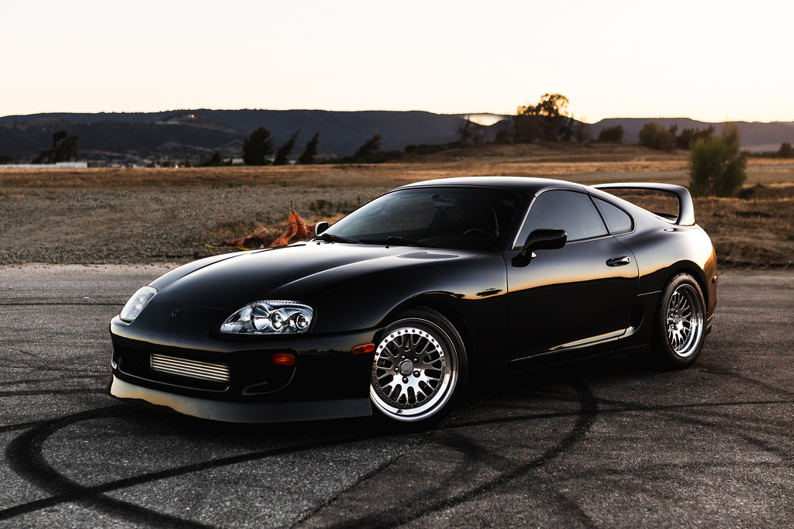
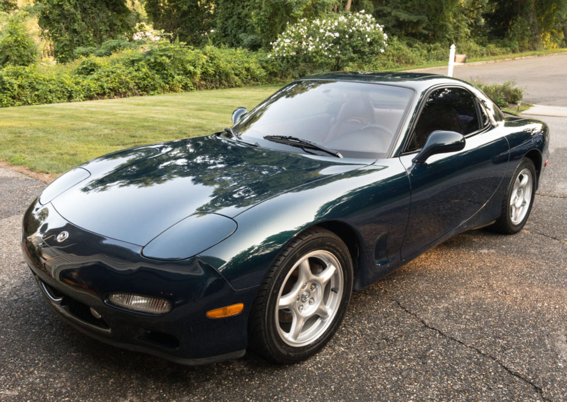

Selengkapnya >>>>>
TOYOTA SUPRA
Tentang Toyota Supra
Toyota Supra adalah mobil sport berkemampuan tinggi yang diproduksi oleh Toyota Motor Corporation, Jepang dari tahun 1978 sampai 2002. Pada mulanya, Supra adalah versi mewah bermesin 6 silinder dari Toyota Celica. Mulai tahun 1986, Supra menjadi mobil sport tersendiri............Selengkapnya >>>>>

Selengkapnya >>>>>
MAZDA RX-7
Tentang Mazda RX-7
Mazda RX-7 adalah mobil sport yang diproduksi oleh mobil Jepang Mazda 1978-2002. Asli RX-7 menampilkan cc twin-rotor mesin rotary Wankel 1146 dan front-midship, tata letak rear-wheel drive. RX-7 menggantikan RX-3 (baik yang dijual di Jepang sebagai Savanna) dan kemudian digantikan semua mobil.............Selengkapnya >>>>>

HONDA NSX
Tentang Honda NSX
Honda NSX (dijual sebagai Acura NSX di Amerika Utara dan Hong Kong) adalah mobil sport yang pada awalnya diproduksi antara tahun 1990 dan 2005 oleh mobil Jepang Honda. Itu dilengkapi dengan mid-engine, tata letak rear-wheel drive, didukung oleh V6 bensin semua-aluminium (bensin) mesin menampilkan Honda Variable Timing Valve dan Lift Electro.............Selengkapnya >>>>>